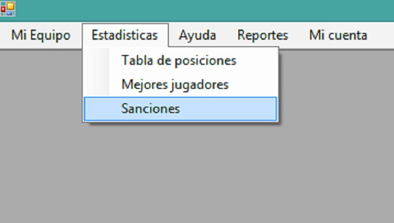
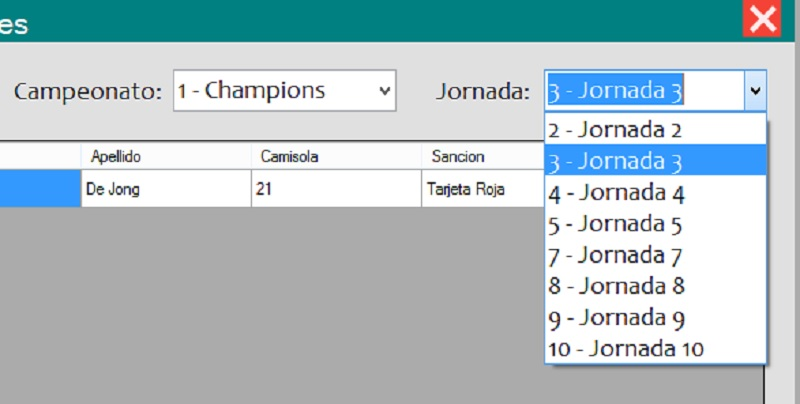
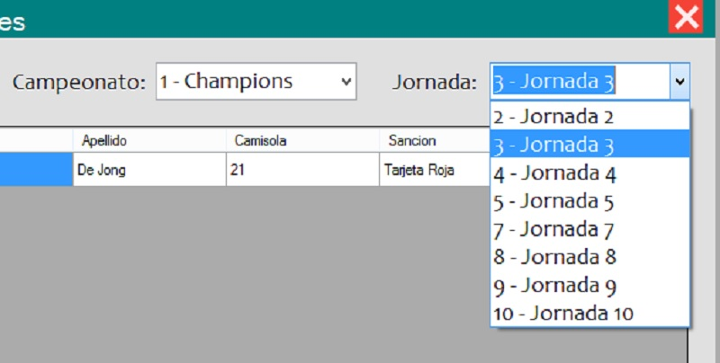

Al abrir la ventana principal del usuario (donde se muestran todas las ventanas), usted podrá observar la barra de menú en la parte superior de ésta:

Damos click en la pestaña "Estadisticas", a continuación click en la opción "Sanciones":
Podremos ver a detalle la tabla de Sanciones del campeonato donde aparecerán los jugadores que tengan alguna falta que se les otorgo durante algún partido. Por defecto aparecerá el primer campeonato al que se inscribió al equipo, esto se puede cambiar desplegando la lista de campeonato y seleccionando el que desee. La jornada por defecto también es la primera, sin embargo, se puede seleccionar la jornada que uno desee media vez exista ya algún partido que se realizó. La tabla actualizará datos con cada opción que se eliga.
 
